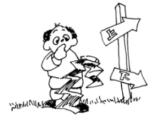

This page has usage examples for the following words:
bitter 苦い にがい
irritant substance 刺激性の物質 しげきせいのぶっしつ
pungent odor ツンとした臭い ツンとしたにおい
salty 塩辛い しおからい
sour すっぱい
sweet 甘い あまい
taste bud 舌（味）のつぼみ した（あじ）のつぼみ
tongue 舌 した
the five senses 五感 ごかん
the sense of taste 味覚 みかく
the sense of smell 嗅覚 きゅうかく
the sense of sight 視覚 しかく
the sense of hearing 聴覚 ちょうかく
the sense of touch 触覚 しょっかく
volatile substance 揮発性の物質 きはつせいのぶっしつ
I can’t taste food.
食べ物の味が感じられなくなりました。
たべもののあじが かんじられなくなりました。
I haven’t noticed it, but my husband tells me my cooking tastes stronger than before.
自分では気が付かないのですが、料理の味がだんだん濃くなってきたと夫が言います。
じぶんでは きがつかないのですが、りょうりのあじが だんだん こくなってきたと おっとがいいます。
Which one do you have difficulty tasting; salty, sour, sweet or bitter?
辛い、すっぱい、甘い、苦いの、どの味が感じにくいですか。
からい、すっぱい、あまい、にがいの、どのあじが かんじにくいですか。
My tongue feels numb like after eating something cold.
冷たいものを食べた後のように、舌がしびれます。
つめたいものをたべたあとのように、したが しびれます。
The paint smells so strong, it makes me sick.
ペンキの臭いが強すぎて気分が悪くなります。
ペンキのにおいがつよすぎて きぶんがわるくなります。
I might have inhaled strong fumes.
何か刺激の強い揮発性のものを吸いこんだようです。
なにか しげきのつよい きはつせいのものを すいこんだようです。
My nose and throat hurt.
鼻と喉の奥が痛くなりました。
はなと のどのおくが いたくなりました。
A conversation between a patient and a doctor about the five senses
Patient:
We often overlook the importance of the five senses, that is, the senses of sight, hearing, smell, taste and touch. It is natural to sense taste with the tongue. Are symptoms, such as the loss of the sense of taste, numbness of the tongue, being tongue-tied and tingling of the tongue, the signs of some diseases? When I pass by buildings which are undergoing refurbishing of the interior or being painted, I sometimes smell pungent odors and feel sick. Can you explain about the senses of taste and smell?
視覚、聴覚、嗅覚、味覚、触覚の重要なことを、日頃つい見過ごしてしまいます。味を舌で感じるということは当り前のことですが、味覚を失う、舌のしびれ、もつれ、舌がピリピリするといった症状は、何かの病気のサインなのでしょうか？ また、建物の内装工事をしている傍を通ったりすると、ペンキの臭いがツンとして気分が悪くなることがあります。味覚と嗅覚について説明をして下さい。
Doctor:
Whereas the senses of vision and hearing have been well studied, disorders of the senses of taste and smell seem to be ignored. However, to those who have the disorders, it not only reduces life’s enjoyment but also may cause accidents, because danger can be judged by taste and smell. The frontline of the sense of taste is taste buds distributed throughout the tongue and pharynx. The frontline of the sense of smell is the nasal mucus lining. Information is transmitted from taste buds and nasal mucus to the brain, where taste and smell are recognized. The lack of taste and smell is caused first by injuries to the tongue surface and nasal mucus, next by systemic diseases, brain injury, mental and nervous diseases. The condition of tongue-tie and numbness of the tongue are nervous diseases, unrelated to the sense of taste. If you feel sick when smelling paint, this happens because your respiratory system may be affected by volatile substances.
視覚、聴覚の研究・治療がかなり進歩しているのに比べて、味覚・嗅覚の異常についてはあまり取り上げられません。しかし、本人にとっては生活上の楽しみが減少する上に、時には、危険を察知することができずに、危ない目に会うということにもなります。味覚の出先機関は舌から咽頭にかけて分布する味のつぼみです。嗅覚は、鼻粘膜がそうです。そこから情報が脳に伝わり、味や臭いが認識されます。味覚や、嗅覚が欠如する原因としては、まず、舌表面や鼻粘膜の傷害が考えられます。次に、全身性疾患や脳の外傷、神経疾患、精神疾患によっても起こります。舌のもつれ、しびれは、味覚とは別に、神経系の病気です。ペンキの臭いでクラクラするのは、刺激性、揮発性の物質によって、むしろ、呼吸器系統が影響を受けたものと思われます。

My two cents 一言おせっかい
It often is said that quitting smoking makes foods taste better. This is because smoking destroys taste buds.
喫煙をやめると食べ物がおいしいとよく聞きますが、これは喫煙により、舌のつぼみが破壊されるからです。
[go01]
| © 1995-2013 NACOS International Institute. All Rights Reserved. |